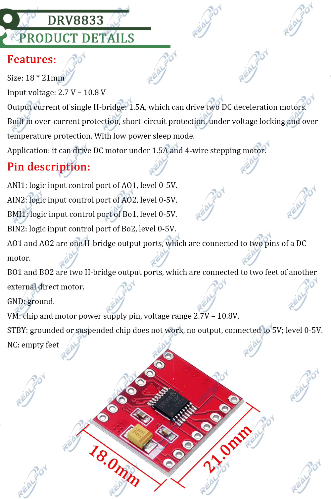

D3
DRV8833 dual H-bridge motor driver module (RealPoy)
untested×2A second, different DRV8833 breakout — same driver IC as D2, but a different board (red PCB, "RealPoy" branding, different size and pin naming). Not a substitute part for D2; keep both entries since the silkscreen and pinout don't match.
- Board 18 × 21 mm (D2's board is 18.5 × 16 mm).
- Input:
VM(chip + motor supply) 2.7–10.8 V. Logic inputs run 0–5 V regardless of VM. - Single H-bridge output current 1.5 A, can drive two DC motors (or a 4-wire stepper across both bridges) — same headline spec as D2, consistent with both being DRV8833-based.
- Protections: overcurrent, short-circuit, undervoltage lockout, overtemperature, plus a low-power sleep mode — per the seller's spec sheet.
- Pinout (this board's own naming, different from D2's IN1–4/OUT1–4):
ANI1/AIN2drive H-bridgeA(AO1/AO2);BMI1/BIN2drive H-bridgeB(BO1/BO2). STBY: grounded (or floating) = chip disabled, no output; tie to 5 V (or a logic-high) for normal operation. This is the RealPoy board's equivalent of D2'sULTpin — same idea, opposite default (D2's ULT floats toward enabled; this one needs an explicit pull-up).NCpins: empty feet, no connection.
To verify:
- Confirm STBY needs an active pull-up before the board will output anything
- Confirm VM range (2.7–10.8 V) before wiring a battery — narrower than D2's 3–10 V, so double-check against whatever pack is in use
- Bench-test each H-bridge independently against an M2 motor
- Compare against D2 once both are tested — decide if we standardize on one DRV8833 breakout going forward
{kind=link}
